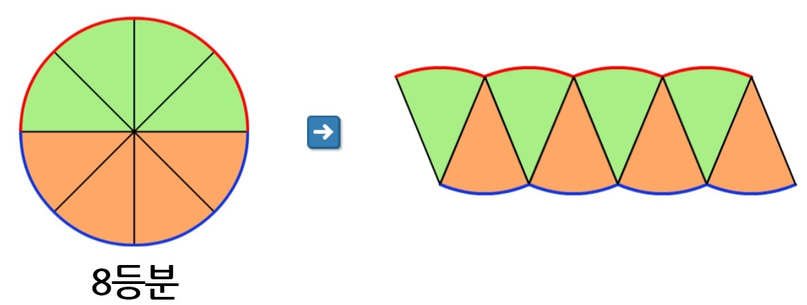
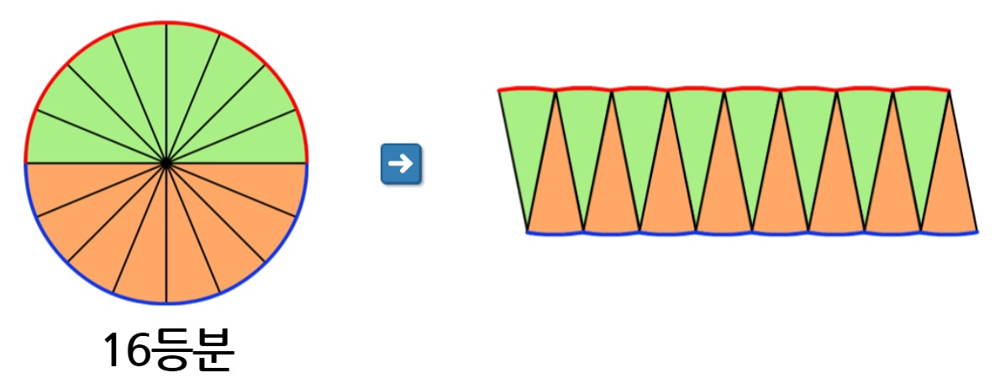
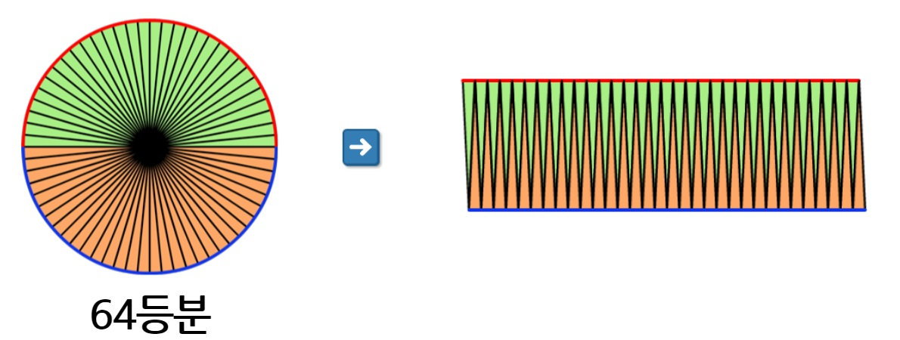

학습목표
-
원의 넓이를 구하는 방법을 설명할 수 있다.
-
자전거 표지판의 넓이를 구할 수 있다.
원의 넓이를 구하는 방법을 설명할 수 있다.
자전거 표지판의 넓이를 구할 수 있다.
원을 8등분하여 이어 붙인다.
원을 16등분하여 이어 붙인다.
원을 32등분하여 이어 붙인다.

원을 64등분하여 이어 붙인다.

원을 한없이 잘라서 이어 붙이면 직사각형이 됩니다.
이 직사각형을 이용하여 원의 넓이를 구할 수 있습니다.
따라서 원의 넓이는 (원주의 절반) X (반지름)으로 구할 수 있습니다.
원을 한없이 잘라서 이어 붙이면 직사각형이 됩니다.
따라서 직사각형의 넓이를 구하는 방법을 이용하여 원의 넓이를 구할 수 있습니다.
직사각형의 가로는 원주의 절반에 해당합니다.
원주의 절반은 (원의 반지름) X (원주율)입니다.
직사각형의 세로는 원의 반지름에 해당합니다.
따라서 원의 넓이는 (원의 반지름) X (원의 반지름) X (원주율)입니다.